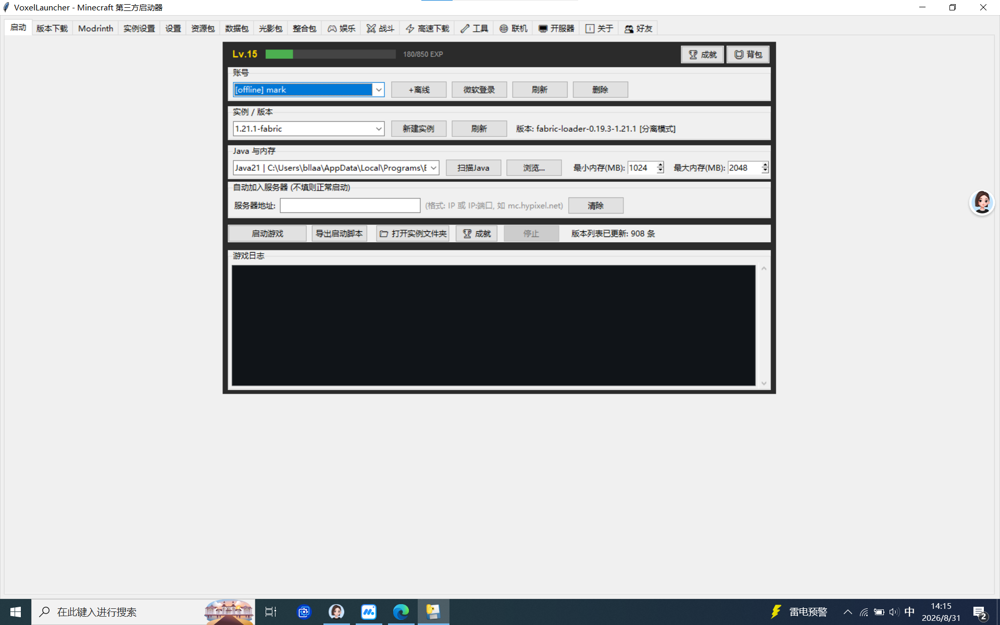
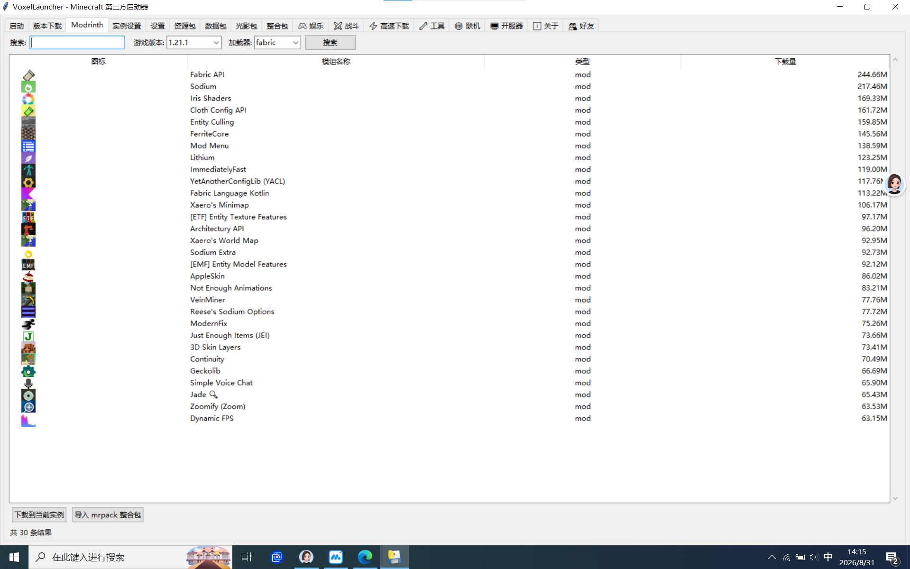
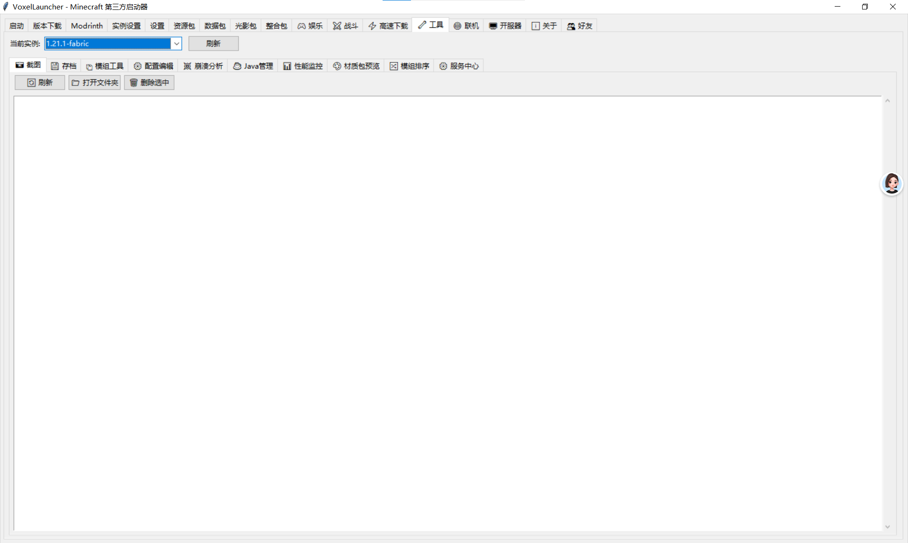
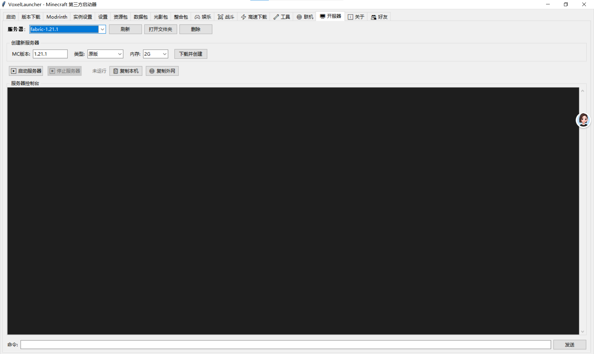

选好版本和账号，点启动就完事。自动扫 Java、自动补游戏文件，不用你操心。
把服务器 IP 填进去，启动游戏直接进服，不用再手动点多人游戏、加服务器了。
内置 Modrinth 搜索，想装什么模组直接搜直接下。还能导入 mrpack 整合包。
下载模组时自动把它需要的前置模组也装上，支持递归依赖，再也不用一个个找了。
原版、Fabric 服务端都能一键建。自动同意 EULA，启动后显示本机和外网地址，一键复制。
开服器里直接看控制台、输命令，不用再开黑窗口。启动停止一键切换。
游戏崩了？把崩溃日志丢进去，自动告诉你是哪个模组搞的鬼、该怎么修。
扫一遍你的 mods 文件夹，重复模组、加载器不对、版本不兼容全给你揪出来。
实时看内存占用、CPU 使用率，游戏卡不卡一目了然。
自动扫描电脑里的 Java，不同版本游戏用不同 Java，一键切换。
备份、还原、删除存档，不用翻文件夹找。
直接在启动器里改模组配置文件，不用找路径、不用开记事本。
多线程下载游戏和模组，比默认下载快不少，支持断点续传。
三个页面分开管，启用禁用、排序、打开文件夹，都在启动器里完成。
内置联机功能，和朋友一起玩更方便。不用再到处发 IP，在启动器里就能组队进服。
游戏里开了局域网？启动器自动帮你获取本机 IP，生成标准连接地址，一键复制发给朋友。
常玩的服务器存起来，下次直接选，不用每次都重新输地址。支持备注名称，好记好找。
加了好友之后，朋友开服了你能直接看到，一键加入。不用再在 QQ 上问"你 IP 多少"。
支持离线账号和微软账号，多个账号切换着用。
谁说启动器只能用来开游戏？VoxelLauncher 里藏了不少好玩的东西，玩游戏之余还能玩点别的。
用启动器也能解锁成就！首次启动游戏、下载第一个模组、开第一次服……各种操作都有对应成就，收集党狂喜。右上角随时看你的成就墙。
用得越多等级越高，启动游戏、下载模组、在线时长都能攒经验升级。Lv.15 只是起步，看看你能刷到多少级。积分还能在兑换里换东西。
不用去网站上改皮肤了，启动器里直接画。支持经典版和纤细版，画完直接应用到游戏里，手残党也能折腾出专属皮肤。
内置 AI 聊天，游戏遇到问题直接问。怎么装模组、服务器怎么开、崩溃了怎么办，AI 都能给你讲明白，还能陪你唠嗑。
加好友、看好友在线状态、一键组队联机。不用再在 QQ 上问"你 IP 多少"，直接在启动器里拉人进服。
点击按钮、启动游戏、完成成就都有专属音效，用启动器也能有仪式感。听腻了还能换。
工具页里直接管理游戏截图，不用去 .minecraft 里翻。好看的建筑、精彩的瞬间，一键查看一键分享。
对，启动器里还有背包。各种活动给的道具、兑换的奖励都塞这里，说不定以后还能开盲盒。




点上面的按钮下载 exe，下载完双击运行。第一次打开会自动初始化，等几秒就好。
启动页点"+离线"加个离线账号，或者点"微软登录"用正版账号。
实例/版本那里选你想玩的版本，没有就去"版本下载"页下一个。选好点"启动游戏"。
切到 Modrinth 页，搜你想要的模组，点"下载到当前实例"，依赖会自动装好。
切到"开服器"页，选版本点"下载并创建"，启动后把地址发给朋友就能一起玩了。